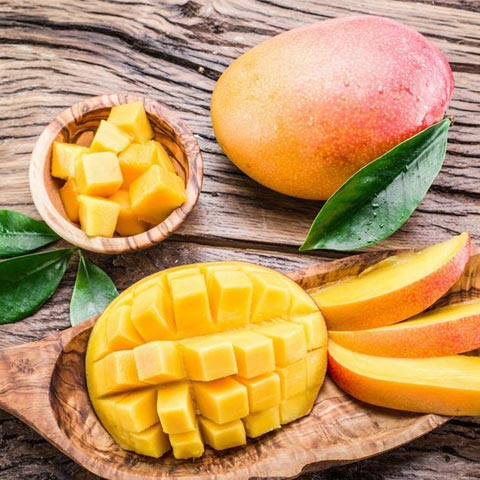

<!DOCTYPE html>
<html lang="zh-TW>
<head>
<title></title>
<meta charset="utf-8">
<body>

<h3>芒果 富含大量的維生素C，抗氧化及美膚<h3>
<u1>
   <li>「芒果」，中文稱呼來自於英文"Mango"的翻譯，漆樹科，原產於印度。早在明朝，李時珍便將芒果稱為「果中極品」，  </li>
   <li>有止暈、行氣、消食等功效。另外，芒果富含大量的維生素C，也有助於抗氧化及美膚。</li>
</u1>

<a href="index.html">首頁</a>
<a href="2nd.html">第2頁</a>
<a href="4th.html">第4頁</a>
<a href="5th.html">第5頁</a>


</body>
</head>
</html>